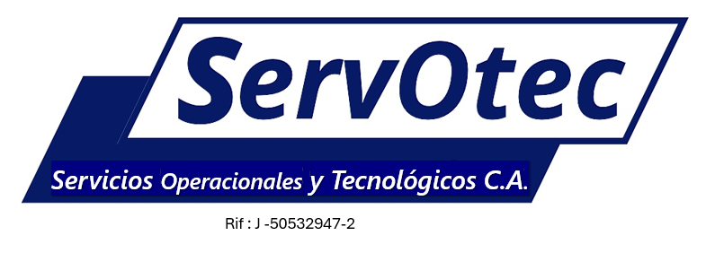
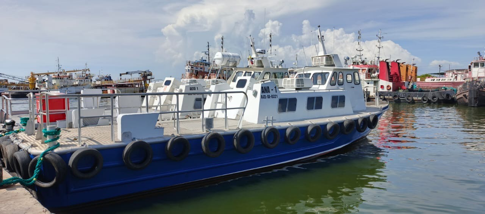
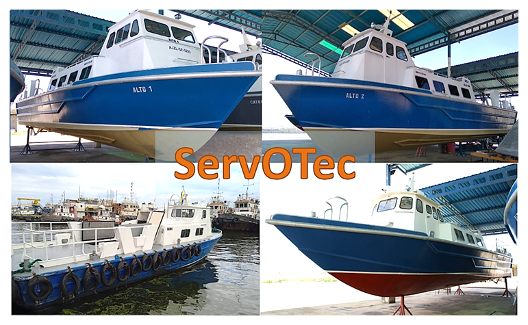
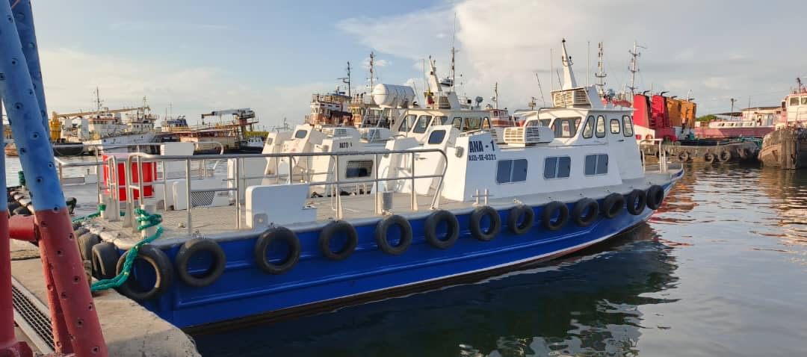
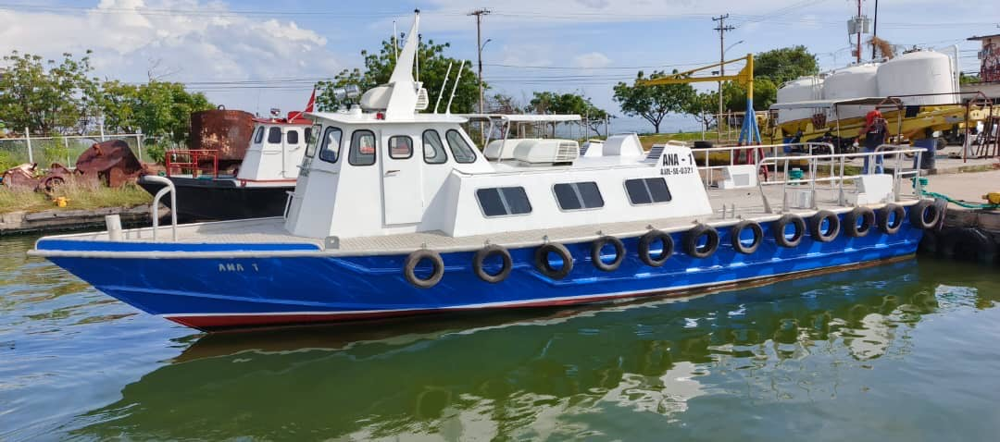

01
Renta de embarcaciones
Unidades navales para movilización de pasajeros, materiales y remolque de otras embarcaciones, respaldadas por mantenimiento proactivo.

ServOtec
Soluciones navales y técnicas para operaciones industriales exigentes: renta y construcción de embarcaciones, asesoría especializada y adiestramiento.
ServOtec
Servicios Operacionales y Tecnológicos C.A. provee soporte integral para clientes industriales, comerciales, petroleros y energéticos. Su propuesta une capacidad naval, conocimiento técnico y programas de mantenimiento orientados a alta confiabilidad.
Áreas de servicio
Unidades navales para movilización de pasajeros, materiales y remolque de otras embarcaciones, respaldadas por mantenimiento proactivo.
Diseño y construcción de unidades lacustres hasta 150 toneladas, con acceso al Lago de Maracaibo y control de tiempos de ejecución.
Apoyo en ingeniería, mantenimiento, confiabilidad, riesgo, incertidumbre y gerencia para proyectos industriales y energéticos.
Planes de formación y desarrollo de competencias para equipos técnicos, operativos y gerenciales.

Operaciones lacustres
ServOtec trabaja con embarcaciones de reciente construcción y unidades rehabilitadas, bajo programas de mantenimiento preventivo y por condición.



Asesoría y adiestramiento
Un equipo multidisciplinario con trayectoria en petróleo, energía, industria, comercio y educación acompaña diagnósticos, optimización, aplicaciones de campo y apoyo gerencial.
Diagnóstico, optimización y acompañamiento técnico para decisiones operativas.
Programas de formación para equipos técnicos, operativos y gerenciales.
Desarrollo de competencias aplicadas a seguridad, mantenimiento y confiabilidad.
Operaciones alineadas con estándares de calidad, seguridad y armonía con el entorno.
Vínculos basados en excelencia, responsabilidad, respeto, confianza y lealtad.
Soluciones orientadas a optimizar rentabilidad y fortalecer la posición del cliente.
Contacto
Cuéntenos qué tipo de embarcación, asesoría o programa de formación necesita. ServOtec puede preparar una respuesta ajustada a su operación.